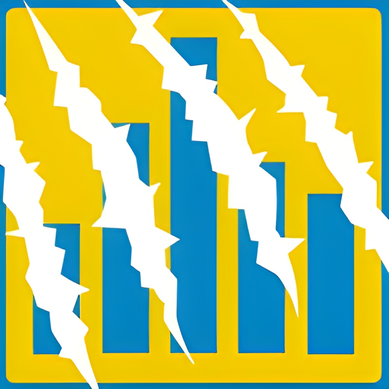
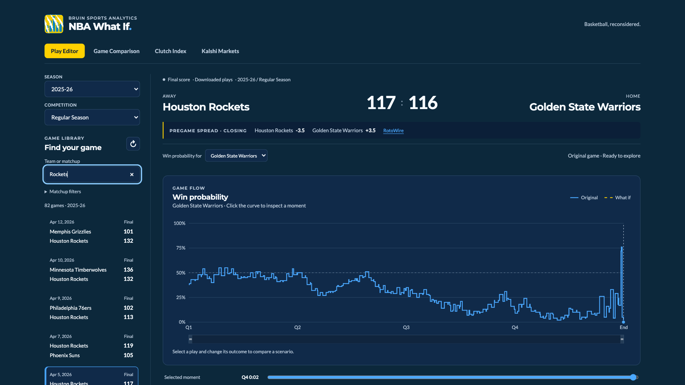
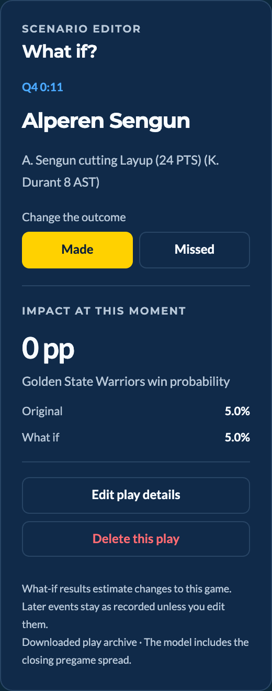
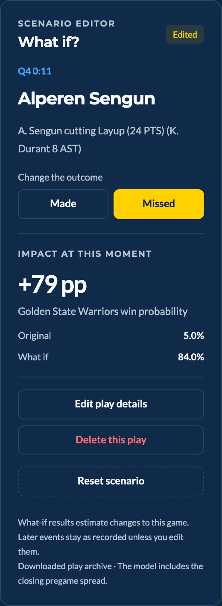
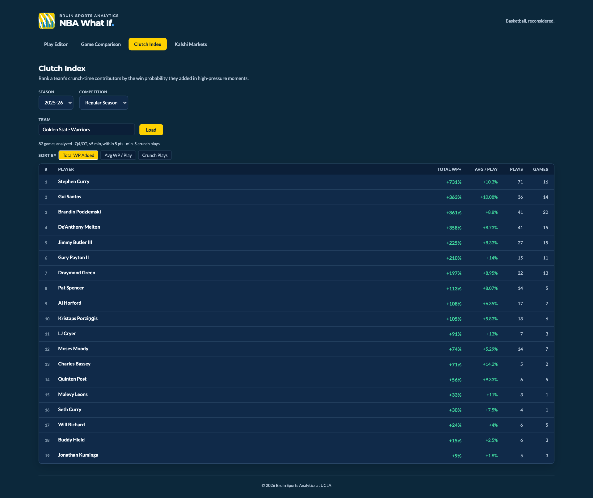

Bruin Sports Analytics · UCLA
NBA What If
.
Basketball, reconsidered.
Step 1 · Pick a game
Any game.
Every play.
Browse six seasons of NBA play-by-play with closing pregame spreads built in.
6
SEASONS
1,230
GAMES A SEASON
467
PLAYS THIS GAME

Step 2 · Read the game
Rockets 117, Warriors 116.
A neural-network win-probability model scores every possession.
Warriors win probability
100%
50%
0%
Q1
Q2
Q3
Q4
End
Q4 0:11 · biggest swing
Sengun layup: 76% → 5%
One basket erases the Warriors’ late lead.
Step 3 · Rewrite it
What if he
missed?
Flip any shot from Made to Missed. The model reruns the game instantly.
WARRIORS WIN PROBABILITY
5%
5%
+79 pp


The alternate ending
Final two minutes,
rewritten.
WHAT-IF FINAL
GSW
116
–115
Original
What if
100%
50%
0%
Q4 2:00
1:00
0:00
Plus · Clutch Index
Who delivers when it matters?
Rank players by the win probability they add in crunch time.
2025-26 Warriors leader
Stephen Curry · +731%
71 crunch plays across 16 games

NBA What If
.
Play Editor · Game Comparison · Clutch Index
github.com/sk2007/nba-what-if